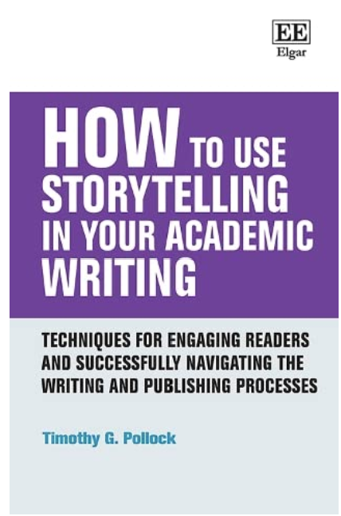

Current readings
“A reader lives a thousand lives before he dies . . . The ”one” who never reads lives only one (George R. R. Martin)”
If I were asked: What do you do most of your time? I would answer: I read! I read everything that crosses me. From medicines’ information to soap ingredients, from randomly poorly designed outdoors to every object’s manual of instructions. The craziest part? I very often catch myself reading words backwards. But books are the top reading, especially dystopias, fantastic, and classics. Recently, I have been interested in mythology books. I am reading one about the hero’s journey. I also like self-help books and books about creativity and writing. Here are the four books I am currently reading (a little every day):
The first two books are not related. The first book: The hero with a thousand faces, is about the hero’s journey, a concept present in almost every book we read and film we watch. In this book, the author Joseph Campbell describes the hero’s journey. The human journey! The second book: Atomic habits: An easy & proven way to build good habits & break bad ones is a best-seller about building new good habits and abandoning bad ones. I’ve read another great book about habits, The power of habit: Why we do what we do in life and business, which describes the origin and cycle of habits with plenty of good examples. Atomic habits, however, is more of a practical guide and has been a revealing reading. Here are they:
I also like reading mangas and watching anime. My favourite one is Naruto, and this image represents it :). This is Rasengan, Naruto’s signature jutsu!

The next two books address academic writing and how to improve it. I have been publishing scientific papers for a few years now. Sometimes I had to deal with reviewers’ comments like “There is high-quality information in your discussion, but it is buried among much other non-relevant information”. These comments were extremely important because they made me realise I had to do something different about academic writing and improve it. In addition to critically reading others’ papers, I picked two books to help me out: one about using storytelling in academic writing: How to use storytelling in your academic writing: techniques for engaging readers and successfully navigating the writing and publishing processes and another about style: The elements of academic style: writing for the humanities.
Writing is an extremely hard process for anyone; writing academic texts in another language is even harder. So, I plan to work on my next publications doing my best to implement the tips I find in these books. Here they are:

Important
If you happen to purchase any of these books through the provided links, I may receive a small commission.